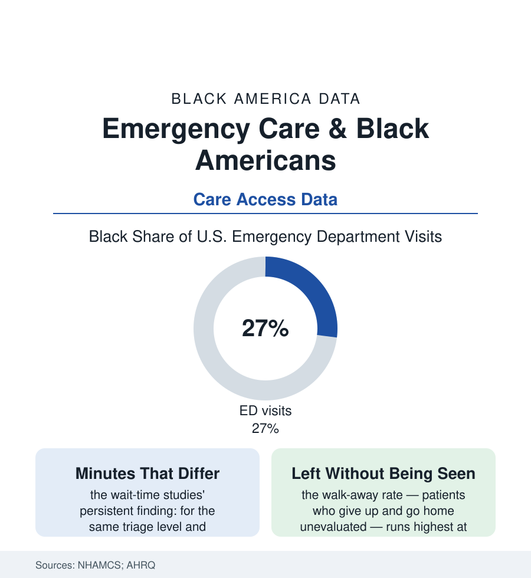

Black Public Health
The Emergency Room: The Safety Net's Front Door Opens at Different Speeds
The ER cannot turn anyone away — but Black patients wait longer to be seen, leave unseen more often, and arrive by ambulance to diverted hospitals in the emergency care data.

The emergency department is the one door in American medicine that cannot legally close: federal law guarantees screening and stabilization to everyone who walks in, insured or not. Black Americans use that door heavily — more than a quarter of the nation's hundred-plus million annual ED visits in the federal survey data — and the emergency care literature documents, in minutes and percentages, how differently the door opens once you're through it. This article reads the emergency file.
The Waiting Room as a Dataset
The wait-time studies are the file's core, and their finding has survived two decades of re-measurement: at the same triage acuity, for the same categories of complaint, Black patients wait longer to see a provider than white patients in the national samples — differences of minutes that widen at the crowded end, measured door-to-doctor across millions of visits in the NHAMCS data and the single-system studies that replicate it. The triage scores themselves carry a layer the literature has begun to audit (the acuity assigned at the desk predicting the wait — the studies finding Black patients scored systematically lower-acuity for comparable presentations in some systems, the algorithm and the nurse's eye both inheriting the record's habits), and the analgesia rows of the pain file reappear here in their starkest setting (the fracture patient's morphine, the abdominal pain's workup — the ED being where the undertreatment data were first made famous). The walkout statistic completes the room's portrait: 'left without being seen' — the patient who waited past endurance and went home with the chest pain, the fever, the bleeding unevaluated — runs at multiples in the crowded urban safety-net departments, the very hospitals the insurance file maps as Black communities' usual care, their waiting rooms at midnight the system's true triage of who can afford to wait and who has a job, a bus, a child at home that says otherwise. The ambulance layer adds the geography (diversion hours — the ER on bypass, the rig rerouted across town — concentrated in the same crowded systems in the EMS data, the heart-attack and stroke clocks of the earlier files starting, for these patients, in a longer ride).
Crowding Is a Policy, Not a Weather Event
The emergency literature is blunt about causes, and they sit upstream of the ER's doors: the department is crowded because the hospital is full (the boarded admitted patient in the ED hallway — the inpatient bed shortage wearing the ER's clothes), the hospital is full in the systems whose payer mix starves their capital (the safety-net file's arithmetic again), and the waiting room is full of the primary-care file's failures (the asthma, the dental pain, the uncontrolled pressure that a functioning usual-source-of-care would have kept out of the department — the survey data's large share of visits classified non-urgent or primary-care-treatable, concentrated among the patients the clinic system serves worst). The workforce rows run through it (emergency medicine's Black share in the low single digits of the specialty data; the nursing and technician benches browner, the trust conversation at the stretcher's side conducted across the same distance as the rest of the atlas). And the improvements are on the record where they're built: the split-flow and provider-in-triage models cutting waits in the systems that adopted them, the equity dashboards (departments that began publishing their waits by race in the quality literature finding, in the way of measured things, that the gaps narrowed once they were a number with an owner), the trauma-center designations' survival data flowing to the neighborhoods that fought for them. The file's lesson is the atlas's in emergency form: the door is open to everyone by law, and everything the law doesn't reach — the minute hand, the triage score, the hallway bed — is where equality is actually decided.
Reading the Emergency Data
A guaranteed door, an unequal wait: the emergency file measures the distance between a right and an experience, in the units the department itself runs on — minutes. The surveys publish them by the million visits. Somewhere in the national average is a woman who waited four hours with a broken wrist and one who waited forty minutes with the same fracture, and the data know which one she more likely was.
More in Black Public Health
Hypertension Among Black Adults: Prevalence, Control, and Consequences
About 55 percent of Black adults have hypertension — the highest rate of any U.S. group. Prevalence, onset, control, and the stroke, heart, and kidney consequences in the data.
Diabetes Among Black Adults: Prevalence and Complications
Nearly one in five Black adults has diabetes, diagnosed or undiagnosed — and its complications fall with particular weight. The CDC data on prevalence, control, and outcomes.
Black Life Expectancy: The Gap at Birth and Its Causes
Black life expectancy at birth is about 73 years, roughly five years below the national figure — the summary measure of every health gap in this section. The CDC data.
Source: National Hospital Ambulatory Medical Care Survey; JAMA and Academic Emergency Medicine wait-time studies; Agency for Healthcare Research and Quality; American College of Emergency Physicians.